Next: Long-Range Interactions: The Ewald
Up: Rare Events: Path-Sampling Monte
Previous: Sampling the Transition Path
To show the power of transition path sampling, it is perhaps best to
consider a simple example of a two-state system where the states are
separated by an energy barrier. This presentation is based on an
exercise from the molecular simulation
course
taught by
Berend Smit and Daan Frankel in 2001, and uses a code called tps.
Here, we consider dimer isomerization in a simple 2D liquid sample of
 15 particles confined to a circle of radius 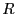. Particles 1 and 2
form the dimer. The total potential energy is given by
15 particles confined to a circle of radius 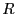. Particles 1 and 2
form the dimer. The total potential energy is given by
The prime indicates that the 1-2 pair is excluded from this sum. All
particles interact with each other via a modified Lennard-Jones
pairwise interaction known as the Weeks-Chandler-Andersen (WCA) potential:
The WCA potential is fully repulsive, and cutoff where the force
vanishes. The particles interact with the circular wall via another
WCA potential:
where 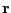 is the vector position and  is the radial position
(i.e., the circle is centered on the origin). The dimer bond (between
particles 1 and 2) is described by a two-well potential:
is the radial position
(i.e., the circle is centered on the origin). The dimer bond (between
particles 1 and 2) is described by a two-well potential:
This potential has stable minima at
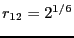 and
. Here,  defines the height of the potential energy
barrier between two stable states as defined by this potential, and
defines the width of this barrier:
defines the height of the potential energy
barrier between two stable states as defined by this potential, and
defines the width of this barrier:
|
|
The WCA and dimer potentials used in this case study.
|
|
For now, we fix at 0.25, and at 3.0. This gives an
areal particle number density
 .
.
What is a reasonable order parameter for this system? The bond
length, naturally. All configurations for which are
defined to be in region  , and all configurations for which are defined be in region 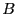. It is important to note here
that is not a measure of the free energy barrier which
determines the kinetic rate in this process. To determine the free
energy barrier, we need to construct the free energy profile,
. This type of restricted free energy
is often termed a Landau free energy.
, and all configurations for which are defined be in region 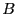. It is important to note here
that is not a measure of the free energy barrier which
determines the kinetic rate in this process. To determine the free
energy barrier, we need to construct the free energy profile,
. This type of restricted free energy
is often termed a Landau free energy.
Let's consider first a small potential barrier height, . For
this height, we can compute
very
accurately from a single long MD simulation (10,000,000 steps;  = 0.001; total energy 15
= 0.001; total energy 15  ). We see from the linear
region of 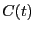 that the rate constant appears to be
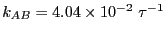. Now, let us perform transition path
sampling MC on this system.
). We see from the linear
region of 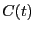 that the rate constant appears to be
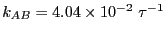. Now, let us perform transition path
sampling MC on this system.
|
|
computed from a long MD simulation for barrier height = 2.
The total energy is set at 15 .
|
|
First, let's decide how long an interval  we need. Clearly,
appears to be linear up to ; following Dellago, we'll choose
= 2.0. 4 Now, we need to conduct two types of MC
simulations:
we need. Clearly,
appears to be linear up to ; following Dellago, we'll choose
= 2.0. 4 Now, we need to conduct two types of MC
simulations:
- A single path sampling MC simulation to compute
and
for
. We will conduct a simulation of
 cycles.
cycles.
- A set of umbrella sampling MC simulations on the following intervals
for
 :
:
 |
min |
max |
| 1 |
0.00 |
1.22 |
| 2 |
1.20 |
1.26 |
| 3 |
1.24 |
1.30 |
| 4 |
1.28 |
1.45 |
| 5 |
1.40 |
2.45 |
When matching the histograms in each of these intervals and
renormalizing, we obtain
. When we then
integrate from to (region ).
We'll use the other default parameter values provided in tps.
These include the maximum angle by which velocity vectors are rotated
in a shooting move (
rad), and the number of
shifting moves per shooting move (95:5), and the number of
-slices per window (200).
We see that
 and
.
and
.
|
|
computed from a transition path sampling MC simulation for barrier height = 2.
The total energy is set at 15 .
|
|
Now, the histogram:
We see that
and
.
|
|
computed from a transition path sampling MC simulation
and umbrella sampling, for barrier height = 2.
The total energy is set at 15 .
|
|
Integrating over region yields = 0.09037. Performing the
requisite operations yields
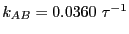, which
compares well to the MD-calculated value
.
Repeating this entire procedure for = 6 yields
.
[to be completed; runs currently executing, March 13, 2013]
Next: Long-Range Interactions: The Ewald
Up: Rare Events: Path-Sampling Monte
Previous: Sampling the Transition Path
cfa22@drexel.edu